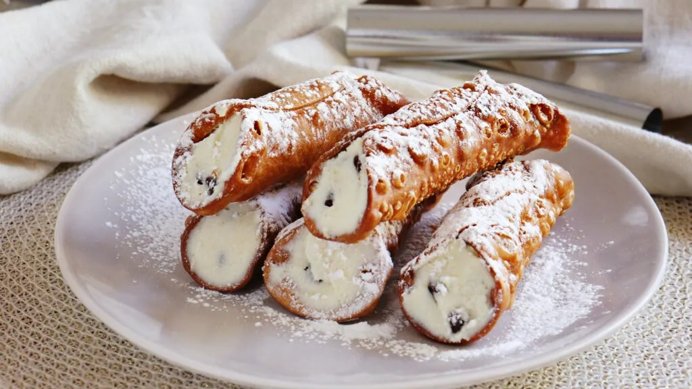
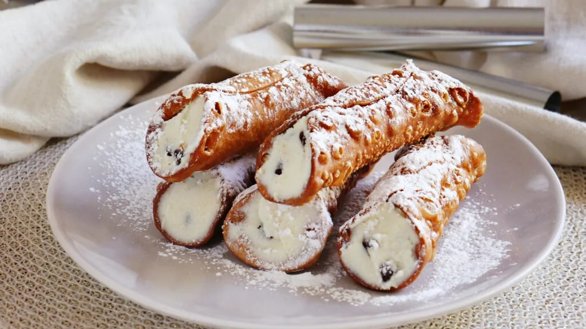

Receta de Cannoli Siciliano, un clásico italiano de sabor y textura única.
El cannolo (significa en italiano 'pequeño tubo'; plural, cannoli) es un dulce típico de la región italiana de Sicilia, de donde es originario. Consiste en una masa enrollada en forma de tubo que dentro lleva ingredientes mezclados con queso ricota. Es tan popular en Sicilia que es muy rara la pastelería donde no se expone una bandeja de cannoli.
Hay que tener en cuenta que los cannoli se deben rellenar en el momento en que se van a consumir, de lo contrario el relleno humedece la masa y deja de ser crocante.
 



Esta receta de empanadas salteñas es una de las más ricas y hoy compartiremos juntos todos los pasos para conseguir unas empanadas perfectas.
Ir a la PaginaEsta torta hecha con levadura, es un clásico de la repostería alemana - rusa
Ir a la Pagina
La empanada es una masa rellena con carnes, verduras o frutas cocida al horno o frita en aceite o grasa.
Ir a la Pagina
El fernet con coca, también conocido como "fernando" o su diminutivo "fernandito" es un cóctel que consiste en bebida de cola y fernet sobre hielo, típico de Argentina, donde es considerado un ícono cultural.
Ir a la Pagina